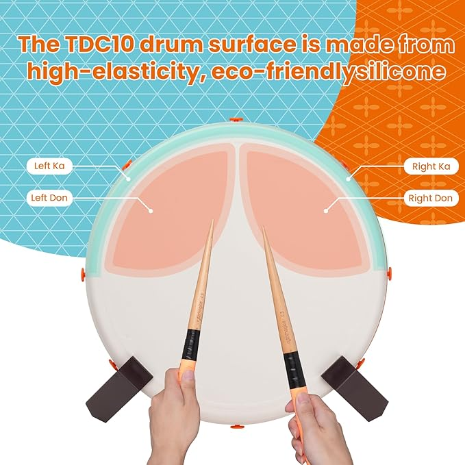

Resumen
El TDC10 es un controlador de tambor diseñado para la experiencia de Taiko no Tatsujin en casa. Con un enfoque en alta calidad de construcción, sensibilidad ajustable y compatibilidad multi-plataforma, el TDC10 se posiciona como una alternativa superior a otros modelos, especialmente para jugadores intermedios y avanzados. Su capacidad de actualización mediante firmware, a través de la aplicación TDC Mate, lo hace adaptable y con potencial de mejora continua, pese a presentar algunas limitaciones en la detección simultánea de ciertos golpes.
Descripción del Producto
- Construcción: Utiliza materiales de alta calidad, como superficies de silicona que imitan la sensación de los tambores arcade, ofreciendo robustez y durabilidad.
- Compatibilidad: Funciona con Nintendo Switch, PS4, PC, Xbox y, mediante adaptador, Wii/Wii U.
- Actualización y Ajustes: Permite calibración fina de la sensibilidad mediante la app TDC Mate; el firmware es actualizable para optimizar el registro de golpes.
- Accesorios: Incluye baquetas (consumibles y reemplazables), cable de conexión y base antideslizante para mayor estabilidad durante el juego.
Características Principales

-
Calidad de Construcción y Diseño:
- Materiales premium y diseño sólido.
- Superficie con excelente rebote y sensación "arcade".
- Base con propiedades antideslizantes para una mayor estabilidad.
-
Sensibilidad y Ajuste:
- Ajustable a través de la aplicación TDC Mate.
- Posibilidad de calibrar desde golpes muy suaves hasta impactos fuertes para adaptarse al estilo del jugador.
-
Compatibilidad Multi-Plataforma:
- Operativo en varias consolas y dispositivos.
- Requiere adaptador para funcionar en Wii y Wii U.
-
Actualización de Firmware:
- Actualizable mediante la aplicación, lo que permite mejorar funcionalidades y solucionar detalles en la detección.
Ventajas y Desventajas
✅ Ventajas:
-
Experiencia de Juego:
- Alta precisión y respuesta natural en cada golpe.
- Niveles de ruido reducidos en comparación con otros tambores, ideal para entornos familiares y domésticos.
-
Versatilidad:
- Compatible con múltiples plataformas, permitiendo su uso más allá de Taiko no Tatsujin (por ejemplo, en aplicaciones de percusión digital o como instrumento musical).
-
Personalización y Actualización:
- Ajuste detallado de la sensibilidad mediante la app TDC Mate.
- Posibilidad de corregir problemas o añadir mejoras mediante actualizaciones de firmware remotas.
-
Soporte y Servicio al Cliente:
- Usuarios reportan respuestas ágiles ante problemas como la rotura de baquetas, demostrando un servicio postventa eficiente.
❌ Desventajas:
-
Detección de Golpes:
- Algunas reseñas indican que el TDC10 no siempre registra correctamente los golpes simultáneos (especialmente en los "Big DON" y "Big KA"), lo que puede afectar los desafíos en canciones de alta dificultad.
-
Dificultad en la Calibración:
- La necesidad de realizar ajustes precisos en la aplicación puede resultar compleja para usuarios menos experimentados.
- La app TDC Mate requiere Android 12 o superior, lo que limita la compatibilidad con dispositivos con versiones anteriores.
-
Dimensiones del Producto:
- Su tamaño compacto (aproximadamente 25 cm de diámetro) puede ser una limitante para jugadores acostumbrados a tambores de tamaño arcade, dificultando la transición a experiencias en cabinas tradicionales.
-
Baquetas y Accesorios:
- Las baquetas incluidas, aunque de buena calidad, son consumibles y pueden necesitar reemplazo frecuente tras un uso intensivo.
-
Requerimientos para Wii/Wii U:
- Necesita un adaptador específico (como el RMWii Converter) para funcionar correctamente en estas plataformas, lo que implica un costo y configuración adicional.
Comparativa con Otros Productos
| Aspecto |
TDC10 |
Hori Tatacon |
| Calidad de Construcción |
Materiales premium, sensación arcade, diseño robusto |
Plástico estándar, sensación menos premium |
| Sensibilidad |
Ajustable y calibrable vía app (TDC Mate) |
Sensibilidad fija, sin opciones de calibración |
| Compatibilidad |
Multi-plataforma: Switch, PS4, PC, Xbox, Wii/Wii U (con adaptador) |
Limitado principalmente a Switch |
| Actualizaciones |
Firmware actualizable, mejora continua |
No ofrece actualizaciones |
| Precio |
Precio superior, pero justificado por calidad y versatilidad |
Precio menor, pero con menor personalización |
Conclusión comparativa: El TDC10 se destaca por ofrecer mayor precisión, actualización y versatilidad, lo que lo hace más atractivo para jugadores que buscan una experiencia de alta calidad. Aunque su precio es superior, la inversión se justifica con la posibilidad de personalizar y adaptar el producto según las necesidades del usuario.
Factores a Considerar
-
Plataforma de Juego:
Asegurarse de que la consola o dispositivo a utilizar sea compatible (especialmente evaluar la necesidad de adaptadores para Wii y Wii U).
-
Nivel de Precisión y Personalización:
Si se busca un control fino en la detección de golpes, la posibilidad de calibrar a través de la app es una ventaja significativa, aunque implica cierto tiempo de configuración.
-
Presupuesto vs. Relación Costo-Beneficio:
A pesar de tener un precio superior a otros controladores económicos, su calidad, capacidad de actualización y versatilidad justifican la inversión.
-
Uso a Largo Plazo y Mantenimiento:
Es importante considerar el costo de reposición de baquetas y otros componentes consumibles, así como la posibilidad de futuras actualizaciones de firmware que mejoren el producto.
-
Entorno de Uso:
Para quienes juegan en entornos domésticos o quieren minimizar el ruido, el TDC10 ofrece una experiencia significativamente más silenciosa en comparación con otros modelos.
Historia y Evolución del TDC10
El TDC10 tiene sus orígenes en una campaña de Kickstarter que permitió a los primeros entusiastas de Taiko no Tatsujin probar una versión preliminar del producto. Algunos aspectos relevantes de su evolución son:
-
Inicio como Proyecto Kickstarter:
- La idea surgió como respuesta a la demanda de una alternativa con mayor precisión y sensación "arcade" para los fanáticos del ritmo.
- Durante el crowdfunding, se recibieron importantes comentarios de los primeros "backers," que ayudaron a identificar áreas de mejora, como la calibración de los sensores y la ergonomía del diseño.
-
Evolución del Producto:
- Tras la campaña, la empresa se centró en perfeccionar el firmware del dispositivo y en mejorar la experiencia a través de la aplicación TDC Mate, lo que permite ahora actualizar la sensibilidad y corregir problemas de registro de golpes.
- Se llevaron a cabo iteraciones que incluyeron ajustes en la estabilidad del soporte (disponible en versiones de plástico y madera) y modificaciones en el diseño de los accesorios.
-
Transición al Mercado Masivo:
- Una vez finalizadas las fases de prueba y validación del crowdfunding, el TDC10 pasó a ser distribuido a través de Amazon y otros canales minoristas.
- Esta transición permitió llegar a un público más amplio, manteniendo la esencia del producto pero con mejoras notables basadas en el feedback de la comunidad temprana.
-
Impacto en la Comunidad:
- El proceso de evolución del TDC10 es un claro ejemplo de cómo las campañas de crowdfunding pueden impulsar la innovación mediante el involucramiento activo de la comunidad, transformando un prototipo en un producto de alta calidad y soporte postventa eficiente.
En síntesis, la evolución del TDC10, desde sus humildes inicios en Kickstarter hasta su actual disponibilidad en Amazon, ha sido marcada por un proceso iterativo de mejora continua, en el que el feedback de los usuarios ha jugado un papel esencial en la optimización del producto.
Dónde Comprar
Disponible en Amazon México y otros minoristas especializados.
Conclusiones
El TDC10 se posiciona como una opción sólida y versátil para los aficionados a Taiko no Tatsujin y para aquellos interesados en emplearlo como instrumento o herramienta musical. Entre sus puntos más destacados se encuentran:
- Su calidad de construcción premium y su diseño pensado en emular la experiencia arcade.
- La personalización y mejora continua gracias a la app TDC Mate y las actualizaciones de firmware.
- La compatibilidad multi-plataforma que amplía sus posibilidades de uso.
- Una historia evolutiva que demuestra un compromiso por parte del fabricante en responder a las necesidades y sugerencias de la comunidad, pasando de un proyecto Kickstarter a un producto robusto y comercialmente disponible en Amazon.
Si buscas invertir en un controlador que combine precisión, versatilidad y capacidad de mejora a lo largo del tiempo, el TDC10 se recomienda sobre otros modelos del mercado, pese a algunos inconvenientes menores en la calibración y detección de golpes.
Referencias y Fuentes
- Videos de reseñas y unboxing en YouTube (incluyendo análisis de Himawari y reseñas de usuarios en Reddit).
- Comentarios y discusiones en foros de Taiko no Tatsujin.
- Reseñas y listados en Amazon Japón y otros sitios minoristas.
- La documentación y actualizaciones del proyecto original en Kickstarter, que evidencian la evolución y mejoras implementadas.